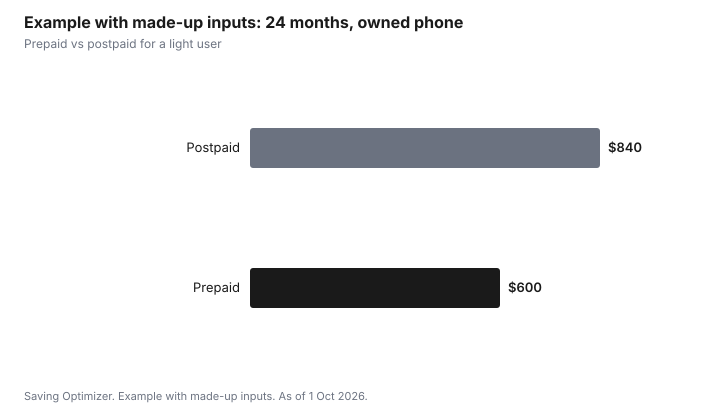

Technology · Canada
Prepaid vs Postpaid Phone Plans in Canada: Credit Checks, Rewards and Who Each Suits
In Canada, prepaid phone plans are paid in advance, usually need no credit check and cap your spending, while postpaid plans are billed after use, usually involve a credit check, and let you finance a phone. Prepaid suits people building credit, newcomers, kids, light users and anyone who wants a hard spending limit. Postpaid suits people who want device financing, the widest plan choice or rewards tied to a monthly bill. Compare the monthly price, including taxes and any autopay discount, for the same data.
Key takeaways
- Prepaid: pay first, no credit check on most plans, no device financing, spending capped.
- Postpaid: billed monthly, usually a credit check (and sometimes a deposit), device financing available.
- Prepaid plans with a phone you own can be cheaper for the same data. Compare like for like.
- Check how long prepaid top-ups and balances stay valid.
- The CRTC Wireless Code applies to both, with some differences for prepaid.
Prepaid vs postpaid compared
| Factor | Prepaid | Postpaid |
|---|---|---|
| Payment | In advance, by top-up or autopay | Monthly bill after use |
| Credit check | Usually not | Usually yes; a deposit may apply |
| Phone financing | Not usually; bring or buy a phone | Common, over up to 24 months |
| Spending control | Capped by the balance | Overage and add-ons possible within Wireless Code caps |
| Perks | Autopay discounts on some plans | Autopay discounts, bundles and rewards on some plans |
| Leaving | Stop topping up | Pay any remaining device balance |
Who each suits
- Prepaid: newcomers without Canadian credit history, people rebuilding credit, kids and teens, light users, second lines.
- Postpaid: people who want to finance a phone, need international or roaming features on the main brand, or bundle with home internet.
- Either: many lower-cost brands offer similar data on both; the difference is often payment method and financing.
Things to check on prepaid
- Top-up validity: how long the balance or plan lasts, and what happens if a payment fails.
- Whether the number is kept if service lapses, and for how long.
- Autopay discounts and whether they require a credit card.
- Roaming options, which may be limited on some prepaid plans.
What the Wireless Code means for each
The CRTC Wireless Code covers both prepaid and postpaid service, but some rules play out differently. Postpaid customers on a contract with an early cancellation fee get a trial period of at least 15 days. Data overage charges are capped at $50 and data roaming at $100 per account per monthly billing cycle unless the account holder agrees to more. Prepaid customers are already limited by their balance. Every customer has the right to an unlocked phone.
| Protection | Prepaid | Postpaid |
|---|---|---|
| Spending limit | Your balance or plan amount | Overage $50 and roaming $100 caps per billing cycle unless you agree to more |
| Trial period | Ask the provider | At least 15 days on contracts with an early cancellation fee, with usage under half the monthly limits (30 days and double limits with a self-identified disability) |
| Unlocked phone | Yes | Yes |
| Cancellation | Stop paying; check how long the number is kept | Pay any remaining device balance |
Step by step: moving from postpaid to prepaid
- Check your device balance. If you financed your phone, the remaining balance comes due when you cancel.
- Confirm your phone is unlocked and works on the new network. Phones sold since 1 Dec 2017 are unlocked.
- Sign up for the prepaid plan and ask the new provider to port your number. Do not cancel the old account first; it ends when the number moves.
- Set up autopay if the plan offers a discount for it, and note the renewal date.
- Watch your first month's usage and adjust the plan if needed.
Credit checks and building credit
A postpaid account usually involves a credit check, and a provider may ask for a deposit or limit financing if your credit history is short. Newcomers to Canada often face this. Prepaid avoids the check. Paying a postpaid phone bill on time may or may not show up on your credit report, depending on the provider; ask before assuming it builds credit. A secured credit card is a more direct way to build credit history.
Prepaid for newcomers, students and kids
Newcomers to Canada often have no Canadian credit history, so a postpaid application can bring a deposit or a smaller financing limit. A prepaid plan gets a Canadian number working on arrival, and you can move to postpaid later and keep the number by porting it. Students and kids benefit from the hard cap: when the balance or plan runs out, spending stops. For a child, pair a prepaid plan with the phone's parental controls and a talk about in-app purchases, which are billed to the app store account rather than the phone plan.
Common mistakes
- Comparing a prepaid plan with no phone to a postpaid plan that includes device financing. Compare plan costs on their own, then add the phone.
- Letting autopay lapse on prepaid. A failed payment can suspend service, and the number may be released after the carrier's grace period.
- Choosing postpaid only for perks you will not use, such as streaming bundles.
- Assuming roaming works the same on prepaid; some prepaid plans limit or exclude roaming.
Example with made-up inputs: two years
These numbers are an example with made-up inputs, not current prices. A light user owns their phone and needs a small amount of data.
| Plan | Monthly | 24 months |
|---|---|---|
| Prepaid | $25 | $600 |
| Postpaid | $35 | $840 |

Sources
- CRTC, The Wireless Code, as of 1 Oct 2026. Applies to prepaid and postpaid services, with some differences for prepaid.
- CRTC, The Wireless Code, as of 1 Oct 2026. Trial period of at least 15 days with usage under half the monthly limits on contracts with an early cancellation fee (30 days and double limits with a self-identified disability); data overage $50 and roaming $100 caps.
- The prices in the example table and chart are made-up inputs.
Frequently asked questions
Do prepaid plans need a credit check in Canada?
Most prepaid plans do not. Postpaid plans usually involve a credit check and may require a deposit.
Can I finance a phone on prepaid?
Usually not. Prepaid customers typically bring their own phone or buy one outright.
Is prepaid cheaper than postpaid?
It can be for the same data, especially for light users who own their phone. Compare like for like, including taxes and autopay discounts.
Does the Wireless Code apply to prepaid?
Yes, the CRTC Wireless Code applies to prepaid and postpaid services, with some differences for prepaid.
What happens if I stop topping up?
Service and possibly the number can lapse after a period set by the carrier. Check the terms before letting a balance run out.
Is there a trial period on prepaid plans?
The Wireless Code trial period applies to contracts with an early cancellation fee, which are usually postpaid. For prepaid, ask the provider about its return and cancellation terms.
Does a postpaid phone bill build my credit?
It depends on the provider and what it reports. Ask before assuming it will. A secured credit card is a more direct way to build credit history.
Can I move from prepaid to postpaid and keep my number?
Yes. Ask the new provider or plan to port your number; keep the existing service active until the move completes.
Researched and drafted with AI assistance and fact-checked against official Canadian sources. How we create content.
Disclosure: Carriers and plans are described as offer types; none is named or ranked. Saving Optimizer may earn a commission if a partner link is added later; no partnership is claimed. Education only.